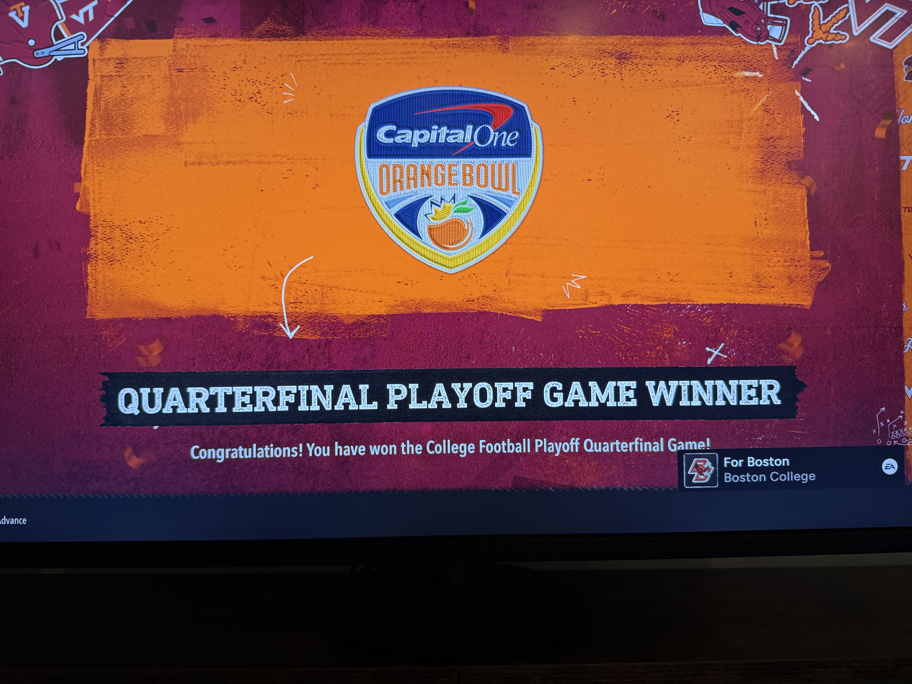

CFP Quarterfinal
Hokies Dismantle Penn State in Miami, Advance to CFP Semifinal
Virginia Tech 45, Penn State 28. Woodside broke the national TD record. Vick Jr. broke the ACC passing yards record. The quarterfinal wasn't close.
Top Stories

CFP Quarterfinal
Hokies Dismantle Penn State in Miami, Advance to CFP Semifinal
Virginia Tech 45, Penn State 28. Woodside broke the national TD record. Vick Jr. broke the ACC passing yards record. The quarterfinal wasn't close.

Feature
The Kid Charlottesville Left Behind
Marquis Woodside grew up in UVA's backyard. They didn't want him. Virginia Tech did. Now he owns every award in college football.
ACC Championship
Virginia Tech Outlasts Miami in 58-55 ACC Championship Classic
The Hokies survived Miami's haymakers, won an overtime track meet, and left Charlotte with Woodside at the front of the Heisman race and Brownlee right behind him.

Dynasty Wire
Woodside Turns Wake Forest Into a Warning Shot
Virginia Tech's 49-7 demolition of Wake Forest turned Week 12 into a warning flare before the Commonwealth Clash.
Preview
#10 Virginia at #6 Virginia Tech: Commonwealth Clash Preview
Virginia Tech brings a three-game rivalry winning streak, ACC control, and a star quarterback into the most consequential Commonwealth Clash in years.
State of the Commonwealth
Hokies First, Hoos Second, and the State Is on Fire
The ACC table has gone full rivalry mode with Virginia Tech first and Virginia second entering Week 13.
13-1Record
#3CFP Seed
29Woodside TDs
45OB Points
ACCChampions
Season Snapshot
ACC ChampionsVirginia Tech
58-55 OT over Miami. Woodside's 4 TDs in Charlotte.
HeismanMarquis Woodside
5 awards. National TD record. Freshman.
Orange BowlVT 45 · PSU 28
Overton's 63-yard run. Vick sets ACC record.
Next UpCFP Semifinal
The Hokies are four quarters from the title game.